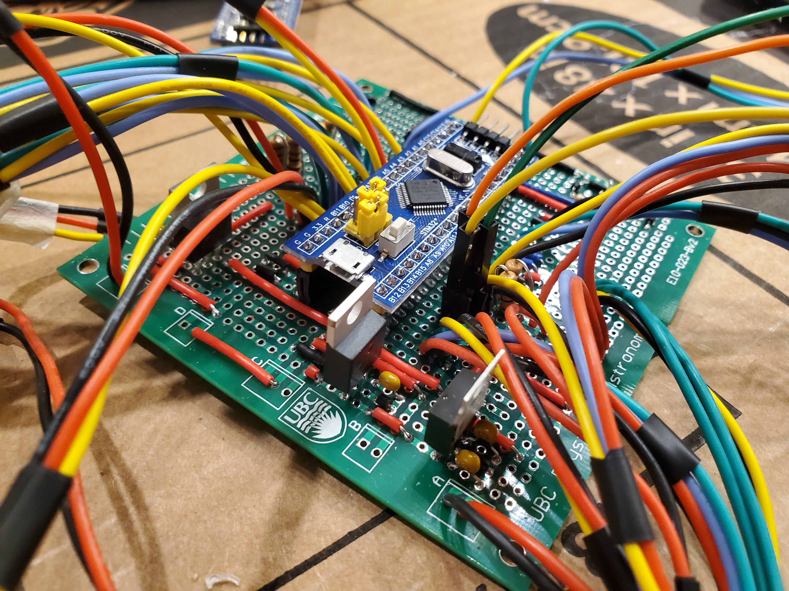
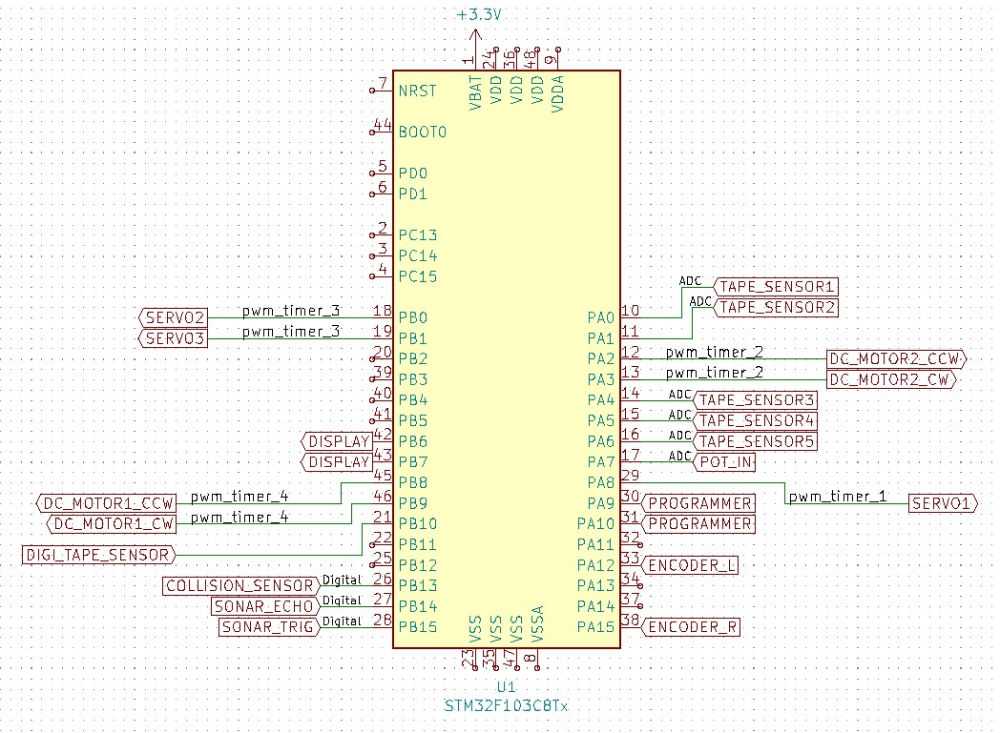
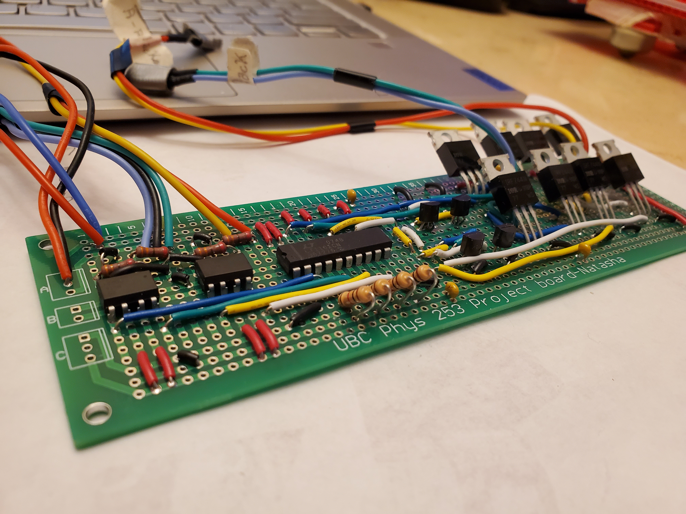
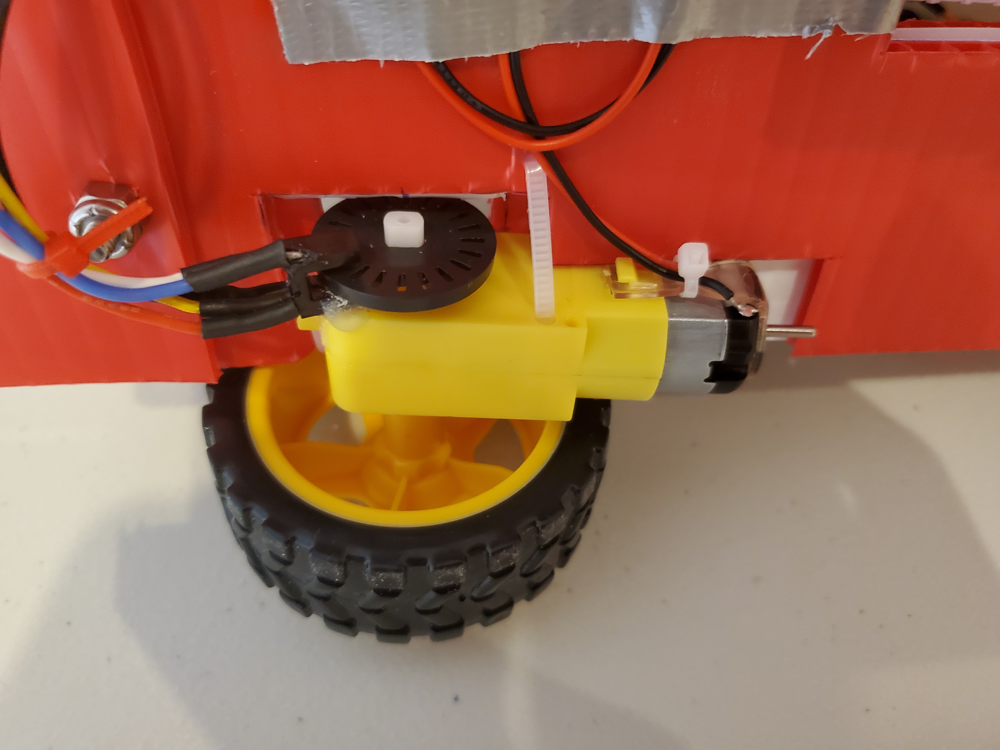
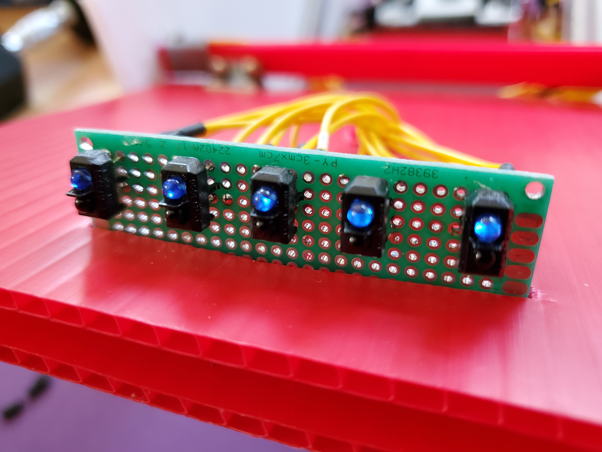

Engineering Phyics
Robot Competition

Context
Each year, second year students in the UBC engineering physics program take a project based robotics course. Students are split into teams of four to design and build robots which they then use in a competition against one another.
Traditionally, this course would have been run at UBC, and we would have had access to 3D printers, waterjet and laser cutters, a machine shop, and instructors and TAs to ask questions to. Unforunately, due to COVID-19, the course was instead run remotely, and we had to build our robots from home. Our challenge was to create robots which could locate 6 cans on an 8' x 8' surface and place them in a recycling bin within 60 seconds. Bonus points were awarded for using an 8'' tall bin and picking up cans laying in different orientations.
Despite the added challenges of the pandemic, we were able to build four working robots, and our team ended up placing 4th out of the 16 teams competiting!
Key elements of our robot
Software
We used a STM-32 Bluepill board microcontroller as the brain of our robot. Software was written in C++, and you can find GitHub repo here. Important software elements included a PID controller for line following, cross correlation to detect the presence of a 1kHz IR signal, analysis of data from our sonar, collision, reflectance and other sensors, and control of our servo motors.
Above is an image of our controller soldered into a breadboard, with all the connections leading out to other parts of the robot. To the right is a circuit diagram of our controller's individual connections
Electrical
For turning our robot, we used a rear wheel differential drive involving two seperate DC motors (one for each wheel). This was acheived using two h-bridge motor controllers circuits, which featured optoisolators to avoid noise from the motors affecting our microcontroller. These circuits allowed us to seperately control the speed of each wheel for turning and line following.
 To execute accurate turns and travel fixed distances reliably, we measured the wheel rotations of our robot using a slotted disc fixed to the shaft of the dc motors and photointerrupters to count how often light passed through the disc. Measuring wheel rotations gave us sustanstially more control of our robot by allowing us to monitor speed of each wheel as well.
 As part of the challenge of the project, we were allowed to lay black electrical tape onto the ground and have our robot follow that tape path as it looked for cans. For actually following the tape, we used an array of reflectance sensors at the front of our robot and used a software PID controller to tell how far away our robot was from the center of the tape and correct for that error. Using five reflectance sensors allowed for us to have more possible error states in our PID, which allowed better following.
Mechanical
In order to actually retrieve cans after locating them using our sonar, we would turn off the tape line and proceed along a calculated path to the can. As we approached the can, we would lift up the front gate of our robot, drive forward over the can and close the gate again to knock the can onto the platform of our robot.
Once a can was sitting on our platform, we could then rotate our platform up and drop the can into the recycling bin being pulled behind our robot
For more videos, photos, diagrams, and information about our robots, such as our power distribution electrical system, and other ideas we pursued, including IR beacon detection and a four bar linkage mechanism, please check out the more detailed website that one of my team mates made here.